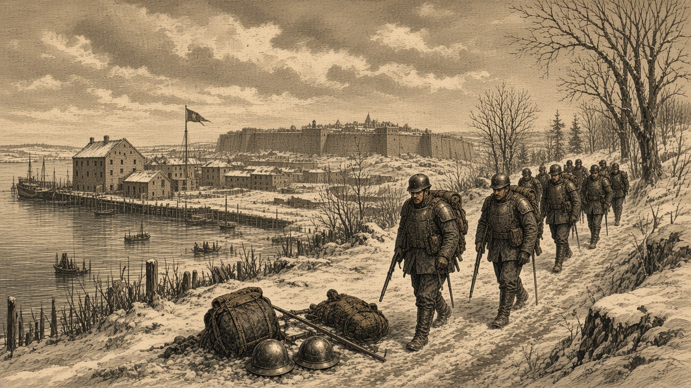

泰平、帝都の兵站と港を奪う
帝国の損害は10万人を超え、残るは都のみ
オラニウムはミサイルで朱川の町を壊滅させた 首都の新たな陥落はなし

【総合部】第149期、セントラ大陸東部で泰平天国がアルガリスト帝国の帝都をめぐる攻防をさらに進め、帝都に隣接する兵站基地と港を相次いで奪った。これで帝国がこの冬に泰平との戦いで出した損害は、累計で10万人を超えた。都そのものは今期も帝国の手に残ったが、守りの拠点はほぼ尽き、残るは帝都一つとなった。詳報は2面。
泰平は帝都の北に展開していた帝国第4軍の歩兵を一掃し、都の西に接する兵站基地を占領して予備兵1,000人を奪った。さらに、そのすぐ南の港も泰平領となった。兵站と港は、帝国が前線へ兵と物資を送り、海から補給を受けるための結び目である。二つを同じ期に失ったことで、帝都の守りを支える血管が断たれた。人口わずか2万6,300人の小国が重ねた累計10万2,300人の損害は、自国の人口のほぼ四倍にあたる。
オラニウム、朱川の町をミサイルで壊滅
ノルステア大陸北部では、オラニウム連邦が朱川共和国へPPミサイル2発を撃ち込んだ。1発は首都丹城の南の町に命中して一帯を壊滅させ、守備していた部隊が全滅した。もう1発は近くの兵站基地に当たり、これも吹き飛んだ。前線の地上戦では、朱川の空兵がオラニウムの装甲兵へ反撃して2,300人の損害を与えたが、町と兵站を一挙に失った打撃は重い。オラニウムは丹城手前の二地点から兵を退いた。詳報は3面。
北の丘で黄砂が再び一隊を失う
アカピ大陸東部の北の丘では、オリョルッル王国が黄砂同盟の第3方面軍を二期続けて壊滅させた。王国の砲兵と歩兵が丘の陣へ集中し、黄砂は前期に続いて同じ丘で一隊を失った。社会面では、冬の火災が4か国以上の15か所に及び、犠牲は計6万5,700人に達した。詳報は4・5面。